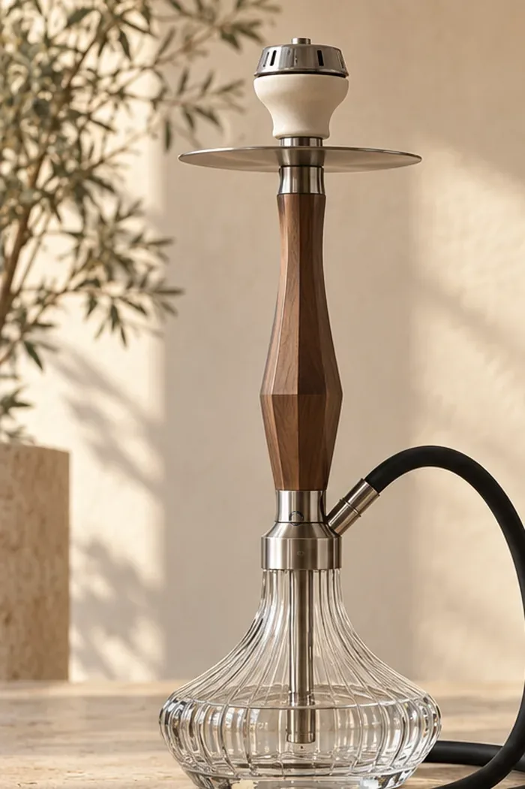
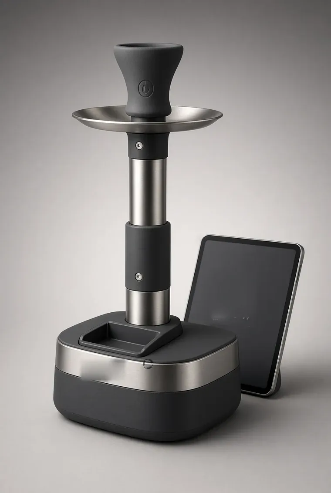
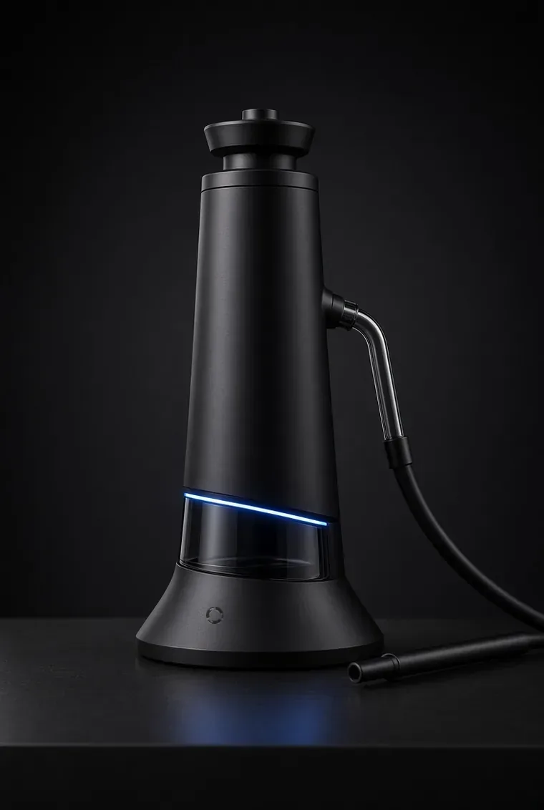

On Yedi Siluet.
Kusursuz Tek Zanaat.
Her model, bulunduğu mekana zamansız bir sanat eseri aurası katmak üzere tasarlandı. Masif ceviz ve meşenin sıcak dokusu, havacılık alüminyumunun heykelsi zarafeti ve darbeye dayanıklı Eastman Tritan™ kristali.
Tüm modellerimiz kırılgan cam ve sıradan contalardan arındırılmıştır. Çeyrek tur medikal bayonet kilit, monoblok paslanmaz daldırma borusu ve 0 ppm Smart HMD kablosuz başlık ünitesi 17 modelin tamamında kusursuz uyumla çalışır.

Masif ceviz kabuk, su seviye pencereli panoramik hazne ve heykelsi siluet. Prestijli yaşam alanlarının başyapıtı.

İskandinav mimarisinin yalın formu, balıksırtı masif meşe paneller ve ipeksi sessiz çekiş akustiği.

Havacılık sınıfı alüminyum kafes, 360° kristal berraklık ve fırçalanmış şampanya pirinç kaplama detaylar.

Akıcı organik hatlar, küresel Tritan kristalini kucaklayan iki masif ceviz kanat ve kompakt zarafet.

Dikey çizgisel ritim, fırçalanmış titanyum gövde omurgası ve koyu masif ahşabın asil kontrastı.

Tarihi su kemerlerinin anıtsal yay formlarını modern CNC frezeleme ile yeniden yorumlayan heykel duruş.

Kozmik gezegen yörüngelerini andıran alüminyum diskler ve ultra alçak ağırlık merkeziyle sarsılmaz denge.

Deniz suyunun şekillendirdiği çakıl taşları gibi pürüzsüz kavisler ve yumuşak dokulu saten yüzey.

Gökyüzüne uzanan asil servi ağacının zarafeti. Geniş salonlar ve yüksek tavanlı malikaneler için anıtsal boy.

Süslemelerden arındırılmış saf metalik estetik. Fırçalanmış AISI 304 çelik omurga ve şeffaf hazne.

Işığı kıran özel prizmatik kanallar ve karanlıkta masif ahşabın sıcaklığını yansıtan gizli ambiyans haresi.

Tek blok havacılık alüminyumundan 6 saatlik kesintisiz frezeleme ile oyulan masif ve sarsılmaz mimari gövde.

Sedef parlaklığında beyaz PVD seramik kaplama ve fırçalanmış şampanya pirinç aksamların eşsiz asaleti.

Fasetli geometrik yüzeyler, dikey hava tahliye difüzörleri ve modern sanat galerisi aurası.

Geleneksel köz ocağı ritüelini kapalı devre elektrikli MCH seramik mühendisliğiyle buluşturan ikonik tasarım.

Rüzgar geçirmez iç hava akımı kafesi ve marin sınıfı kaplamasıyla yatlar ve açık hava terasları için tasarlandı.

Süper kompakt seyahat boyu. Manyetik taşıma çantası, kırılmaya dayanıklı Tritan hazne ve devrilmez düşük ağırlık merkezi.
Koleksiyona Özel Manyetik Sunum Kutuları
Her bir NARION takımı, mücevher ve saat endüstrisi standartlarında sert kapaklı, soft-touch dokulu ve neodimyum mıknatıslı özel sunum kutusuyla teslim edilir.
Kusursuz Açılım Ritüeli
Ürün kutusunu açtığınız andan itibaren lüks hissiyatı yaşatan CNC lazer kesimli yüksek yoğunluklu EVA sünger yatak; nargile gövdesini, Tritan™ hazneyi ve Smart HMD kitini mikron düzeyinde sararak darbelere ve seyahat sarsıntılarına karşı tam koruma sağlar.